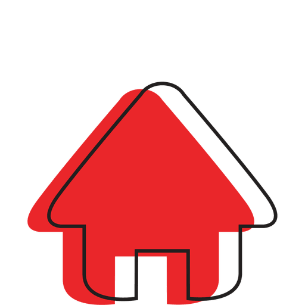

El Patron 970 es uno de esos artistas emergentes del panorama español, específicamente del Drill. Cuenta con colaboraciones con Yung Sarria, Kidd Keo, Morad, Jarfaiter y demás artistas dentro de la escena. En varias de sus canciones lo ha petado y ha conseguido millones de reproducciones.
Tras el éxito en su carrera musical, va subiendo y generando números increíbles. Ha llegado a fichar por DBT Records, el sello discográfico donde se encuentra Kidd Keo, el propietario de este es David Patrón, quien al ver su drip le dijo a El Patron 970 que si quería formar parte y este acepto sin pensarlo ya que es una gran oportunidad para el. DBT se lo monta serio y no es cosa de juego ya que su performance está a otro nivel.
Sus temas más valorados son los que tienen mas visitas aparte de las colaboraciones como «Yo con mi man» que ya cuenta con más de 14 millones de reproducciones en YouTube, aunque deberías de escucharlos todos porque es un autentico pionero del Drill.
|  |
|
|